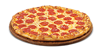

A pizzaria que fica no campus em Garopaba é um lugar acolhedor e animado, frequentado por estudantes e moradores locais que buscam uma refeição rápida e saborosa. Ao entrar, os clientes são recebidos por uma decoração moderna e descontraída, com paredes pintadas em tons quentes e iluminação suave.
O ambiente é espaçoso e bem iluminado, com várias mesas e cadeiras confortáveis, perfeito para grupos de amigos ou familiares desfrutarem de uma refeição juntos. Há também uma área de espera com sofás aconchegantes para os clientes relaxarem enquanto aguardam sua pizza.
O cardápio é variado e oferece uma ampla seleção de sabores de pizza, desde as clássicas até as mais exóticas. Todas as pizzas são preparadas com ingredientes frescos e de alta qualidade, e podem ser personalizadas de acordo com as preferências dos clientes.
Além de pizzas, a pizzaria também oferece outras opções de comida, como saladas, massas e sobremesas, todas igualmente deliciosas. Os preços são razoáveis e adequados para o orçamento de estudantes universitários.
O atendimento é amigável e eficiente, com os funcionários sempre prontos para ajudar os clientes a escolherem o melhor sabor de pizza ou tirar qualquer dúvida sobre o cardápio. A pizzaria também oferece entrega em domicílio para quem preferir desfrutar de suas pizzas no conforto de casa.
No geral, a pizzaria do campus em Garopaba é um lugar que combina comida saborosa, ambiente agradável e atendimento de qualidade, tornando-se uma opção popular entre os moradores locais e estudantes universitários.
| Nome | Preço | Descrição | |
|---|---|---|---|
|

Calabresa |
R$ 30,00 | Calabresa, cebola, tomate, mussarela e orégano | Comprar |
|
Portuguesa |
R$ 30,00 | Presunto, ovos, cebola, tomate, mussarela e orégano | Comprar |
|
Frango com catupiry |
R$ 30,00 | Frango, catupiry, cebola, tomate, mussarela e orégano | Comprar |
|
Queijos |
R$ 30,00 | Provolone, catupiry, mussarela e parmesão | Comprar |
|
Brigadeiro |
R$ 30,00 | Chocolate, leite condensado, creme de leite e chocolate granulado | Comprar |